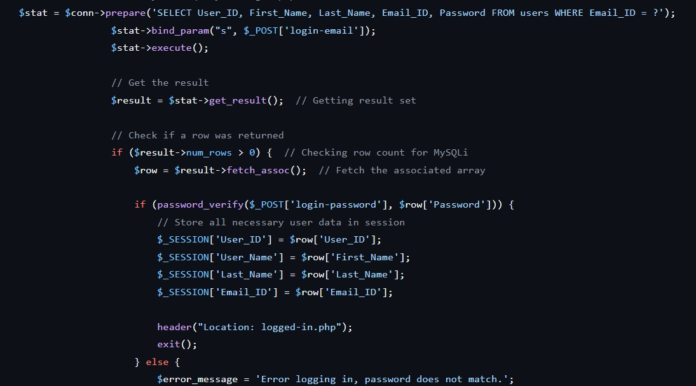

Browse My Recent
Portfolios

Stroke Prediction (Ensemble Learning)
A predictive machine learning model designed to identify high-risk stroke patients. Utilizes Ensemble Learning techniques to combine multiple algorithms, achieving superior accuracy compared to single-model approaches. Features include advanced data preprocessing (imputation) and handling class imbalance.
Tech Stack: Python, Pandas, Scikit-learn

NLP Emotion Classifier
A Natural Language Processing (NLP) system capable of analyzing text and categorizing it into distinct emotional states. Implements text preprocessing (tokenization, stop-word removal) and machine learning classifiers to interpret sentiment from unstructured user data.
Tech Stack: Python, NLTK/Spacy, TensorFlow

Logistic Optimization (PSO)
A Computational Intelligence solution applying the Particle Swarm Optimization (PSO) algorithm to solve complex logistics routing problems. Demonstrates the use of bio-inspired heuristic search strategies to find optimal paths and maximize efficiency. The figure demonstrates the Convergence comparison. The Baseline (Fixed inertia) stagnates around error 23.83, while the Novel solution (Adaptive inertia) continues to optimize, reaching a final error of 20.08.
Tech Stack: Python / Java

Team E-Commerce Project
A full-stack e-commerce platform built collaboratively by a team of 9. Developed using PHP (Laravel) for robust backend architecture and MySQL for relational data management. My role focused on implementing secure Authentication (Login/Logout), database configuration, and managing Version Control (Git/GitHub) to coordinate development workstreams.
Tech Stack: PHP, Laravel, MySQL, GitHub, Agile (Trello)
CONTACT ME
Let's Connect
I am currently open to new opportunities. Whether you have a question or just want to say hi, I'll try my best to get back to you!